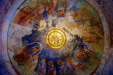

Noel Baba Kilisesi
Noel Baba Kilisesi Demre'de bulunan, Noel Baba olduğuna inanılan Aziz Nikolaos'ın ölümü ile yapılan kilise. Noel Baba'nın ölümünden sonra bir süre burada yattığı daha sonra kemiklerinin İtalyan denizcilerce Bari'ye götürüldüğüne inanılır.
Noel Baba Kilisesi, Antalya’ya bağlı Kaş ile Finike arasındaki Demre ilçesinde bulunuyor. Hacettepe Üniversitesi Edebiyat Fakültesi Sanat Tarihi Öğretim Üyesi Prof. Dr. Yıldız Ötüken tarafından yürütülen kazı çalışmalarına Hacettepe Üniversitesi, İstanbul Üniversitesi, Çanakkale Onsekiz Mart Üniversitesi, Kayseri Erciyes Üniversitesi ve Hatay Mustafa Kemal Üniversitesi gibi üniversitelerden öğretim üyeleri ve işçiler katılmıştır.
